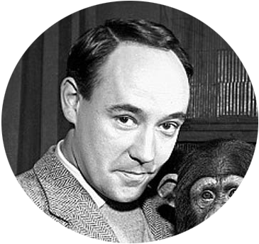

Congo, an Unexpected Artist
Congo was born in 1954. He learned to draw near the age of two, beginning when zoologist Desmond Morris offered Congo a pencil. Morris said, "He took a pencil and I placed a piece of card in front of him. This is how I recorded it at the time, 'Something strange was coming out of the end of the pencil. It was Congo's first line. It wandered a short way and then stopped. Would it happen again? Yes, it did, and again and again'." Morris soon observed that the chimp would draw circles, and had a basic sense of composition in his drawings. He also showed the ability of symmetrical consistency between two sides of a sketch; when Morris drew a shape at one side of a piece of paper, Congo would balance the structure by making marks on the other half of the paper. Similarly, if a color on one side contained blue for example, he would add blue to the other side as well to keep balance.
He soon began painting; the patterns he made were never ever distinguished, pictorial images, but usually of a vague "radiating fan pattern" in the abstract impressionism style. Between the ages of two and four, he produced about 400 drawings and paintings. Through that time, Congo developed a familiarity with his routine painting sessions with Morris. When a picture was taken away that he didn't consider complete, Congo would reportedly begin to scream and "throw fits". Also, if the ape considered one of his drawings to be finished, he would refuse to continue painting even if someone tried to persuade him to do so.
In the late 1950s, he made appearances on the British television show Zootime, which was presented live from the London Zoo by Desmond Morris. He died at ten years of age in 1964 of tuberculosis.
“I’m the only artist in history that’s been outsold by his pet” Desmond Morris
